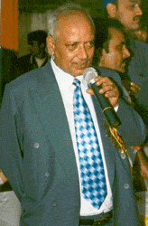

Home
Vision
History
Location
Organisation
Curriculum
School Uniform
Teaching Staff
Facilities
Activities
Rules
Register online
Photogallery
Contact Us
Site Map
Vision
History
Location
Organisation
Curriculum
School Uniform
Teaching Staff
Facilities
Activities
Rules
Register online
Photogallery
Contact Us
Site Map
Organisation
The school is run and managed by Jha Educational Trust ( JET).
 To look after the day – to - day functioning of the school it has a full fledged Managing Committee consisting of members from among trustees, members of teaching staff, person interested in Education, guardians and persons of standing in the society.
To look after the day – to - day functioning of the school it has a full fledged Managing Committee consisting of members from among trustees, members of teaching staff, person interested in Education, guardians and persons of standing in the society.
The Academic Council of the school supervises the academic affairs of the school and sets forth its advice to the authorities to tone up the performance of the pupils.
Besides the above bodies, the school has its Advisory Committee which advises the authorities how the children can attain academic excellence.
Names of the important functionaries:
- Mr. Bhogendra Jha
Chairman of the School Managing Committee (SMC) and the J.E.T. - Mr. J. P. N. Jha
Secretary, SMC - Mr. B. N. Jha
Principal, Calcutta Public School
School Organization Structure:
- Co – educational English medium school
- Day school with two distinct sessions.
- Morning Session includes:
Primary Section : Lower Nursery to Class IV
Higher Secondary Section : Class XI and XII with two sections of Science, Commerce and Humanities ( Arts ) - Day Session includes :
Secondary Section : Class V to X.
- Morning Session includes:
- Teaching Staff : The Teaching staff comprises a team of highly qualified, trained and experienced teachers selected purely on merit basis. They participate regularly in seminars and workshops organized by educational forums to keep abreast of the latest teaching methodologies. As of now the student ration is 1:20.
Powered by Google.com